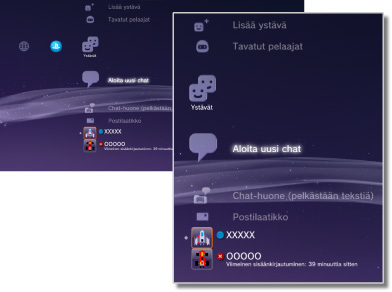

Ystävät > Ystävät-luokka
Ystävät-luokka
Tämän toiminnon käyttäminen saattaa edellyttää, että käyttöjärjestelmä päivitetään.
Voit lähettää ja vastaanottaa viestejä sekä chattailla muiden PS3™-käyttäjien kanssa PSNSM-verkossa. Jotta voit käyttää näitä ominaisuuksia, sinun on luotava (rekisteröitävä) Sony Entertainment Network -tili.  (Ystävät) sisältää seuraavat kuvakkeet. Kuvakkeet vaihtelevat käyttöehtojen mukaan.
(Ystävät) sisältää seuraavat kuvakkeet. Kuvakkeet vaihtelevat käyttöehtojen mukaan.

 |
Estolista | Tarkastele estoluettelossa olevia henkilöitä. |
|---|---|---|
 |
Lisää ystävä | Lähetä jollekin henkilölle viesti, jossa pyydät häneltä lupaa lisätä hänet kaveriluetteloosi. |
 |
Tavatut pelaajat | Katso luettelo henkilöistä, joiden kanssa olet pelannut PlayStation®3-pelejä verkossa*. Valitsemalla tämän kuvakkeen voit lähettää pelaajalle viestin tai pyytää häneltä lupaa kaveriksi lisäämiseen. |
 |
Aloita uusi chat | Aloita chat. |
 |
Chat-huone (pelkästään tekstiä) | Tämä kuvake on näkyvissä, jos käytettävissä on chat-huone tekstiä varten. Jos uusi chat-huone lisätään, näkyviin tulee  . . |
 |
Ääni-/videochathuone | Tämä kuvake on näkyvissä ääni- ja videochattien aikana. |
 |
Postilaatikko | Kirjoita uusia viestejä ja katsele sinulle lähetettyjä ja lähettämiäsi viestejä. |
 |
(oma online-tunnus) | Tiliä varten valitsemasi avatar näkyy tässä. |
|
(ystävän nimi) | Tämä kuvake osoittaa, että käyttäjä kuuluu ystäväluetteloosi. Valitsemalla tämän kuvakkeen voit lähettää ja vastaanottaa viestejä sekä chatata ystäviesi kanssa. |
| * |
Jotkin pelit eivät ehkä tue tätä toimintoa. |
|---|
Vihjeitä
- PS3™-järjestelmässä ystäväluetteloon lisättyjä käyttäjiä kutsutaan ystäviksi. (Ystävät) -toiminnon avulla lähetettyjä tai vastaanotettuja sähköpostiviestejä kutsutaan viesteiksi.
- Enintään 2 000 ystävää voidaan lisätä.
- Enintään 100 ystävää näytetään.
- Jos sinulla on yli 100 ystävää, sinun on kirjauduttava ulos ja kirjauduttava takaisin sisään, jotta voit päivittää näytettävät ystävät. Kun teet tämän, kirjaudu ulos myös muilla latteilla, joilla olet kirjautunut PSNSM-palveluun.
- Voit hallita ystäviä sellaisista laitteista, kuten PS4™-järjestelmät, PS Vita -järjestelmät, älypuhelimet ja muut laitteet, joihin on asennettu PlayStation®App-sovellus.
 (Tavatut pelaajat) -kohdassa voidaan näyttää enintään 50 pelaajaa. Kun tämä raja tulee vastaan, vanhin merkintä poistetaan aina sitä mukaa, kun uusi pelaaja lisätään.
(Tavatut pelaajat) -kohdassa voidaan näyttää enintään 50 pelaajaa. Kun tämä raja tulee vastaan, vanhin merkintä poistetaan aina sitä mukaa, kun uusi pelaaja lisätään.- Äänichattiin tarvitaan ääntä lähettävä ja vastaanottava laite (kuten kuulokemikrofoni, joka on lisävaruste). Videochattiin tarvitaan lisäksi USB-kamera (lisävaruste).
- PS3™-järjestelmässä voi käyttää yhteensopivaa USB-kuulokemikrofonia/Bluetooth®-kuulokemikrofonia/EyeToy™-USB-kameraa/PlayStation®Eye/USB-kameraa, joka on UVC (USB video class) -yhteensopiva.
- Jos kytket USB-kameran USB-keskittimen kautta, käytä keskitintä, joka tukee USB 2.0-nopeutta. Jos käytät keskitintä, joka ei tue USB 2.0-nopeutta, kuva saattaa näkyä huonosti tai olla näkymättä ollenkaan.
- Lisätietoja tuetuista oheislaitteista ja niiden käytöstä saa oheislaitteiden jälleenmyyjältä.